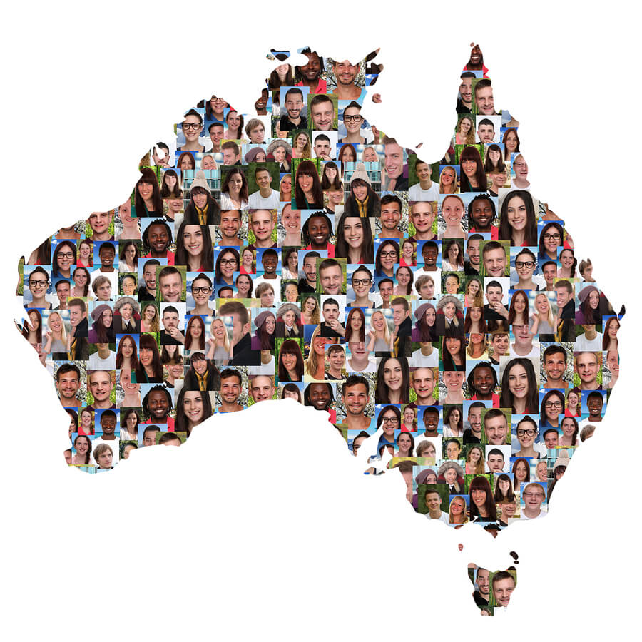

AUSTRALIAN CULTURAL DIVERSITY
Cultural Diversity
in Australia
How birthplace, language, geography and migration reveal the cultural landscape of modern Australia.
UNDERSTANDING THE DATA
Two sources reveal different parts of Australia's story
This visualisation combines data from the Australian Bureau of Statistics (ABS) with settlement data from the Australian Government Department of Home Affairs.
ABS Census data is used to explore birthplace, languages spoken and the geographic distribution of culturally diverse communities across Australia.
Home Affairs settlement data is used to examine migration streams and where new settlers established themselves between 2016 and 2025.

ORIGINS & LANGUAGE
Australia's diversity begins with where people come from
Decades of migration have created a population with connections to countries and languages across the world. Birthplace and language reveal two different dimensions of this diversity.
Country of birth. The treemap shows the relative size of major overseas-born communities and how they contribute to Australia's broader population structure.
Language. The ranked chart shows the most commonly spoken languages other than English, providing another view of Australia's cultural composition.
GEOGRAPHY
Cultural diversity is concentrated differently across Australia
The overseas-born population is not distributed evenly. Some areas have a particularly high share of overseas-born residents, while Australia's largest population centres also contain the greatest absolute numbers.
Population share. The choropleth highlights areas where overseas-born residents make up a particularly large proportion of the local population.
Population size. The proportional-symbol map focuses on absolute numbers, revealing where the largest overseas-born populations live.
STATE DIFFERENCES
Australia's states have distinct cultural profiles
Looking beyond national totals reveals substantial differences in the languages and diversity profiles of Australia's states and territories.
Language by state. The heatmap reveals which major language communities are particularly prominent across different parts of Australia.
State comparison. The dumbbell chart provides another direct comparison of cultural diversity between states.
NSW and Victoria show different language patterns
Australia's two largest states contain many of the same language communities, but their relative sizes differ.
Comparing New South Wales and Victoria directly makes it easier to see which language communities are more strongly represented in each state.
GLOBAL CONNECTIONS
Migration connects Australia to countries across the world
Australia's cultural diversity continues to evolve through migration. Settlement patterns reveal the international connections that contribute to the population today.
The flow map emphasises the geographic connections between migrant origins and settlement destinations across Australia.
SETTLEMENT STREAMS
Different migration streams lead to different destinations
Skilled, family and humanitarian migration do not contribute equally to every state and territory. Their distributions help shape Australia's settlement patterns.
The Sankey diagram shows the relationship between migration stream and destination, allowing the different settlement patterns of skilled, family and humanitarian migrants to be compared.